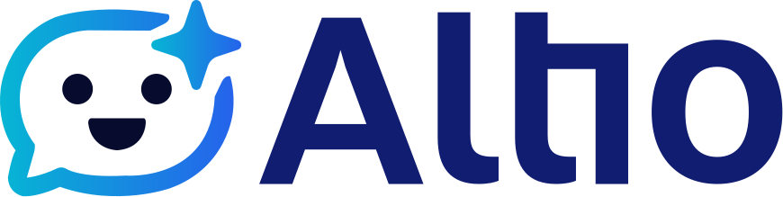
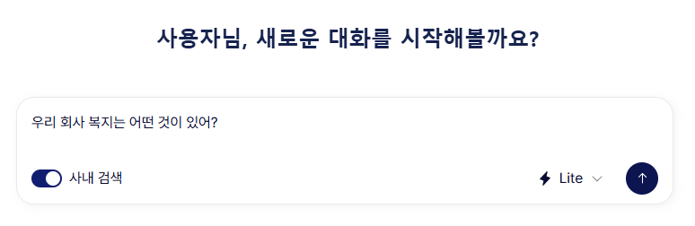
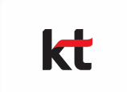
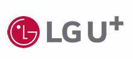
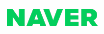
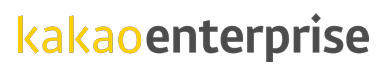
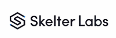
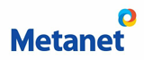

AI Labs · Altio
AICC (AI Contact Center) · 응대·운영·개선을 하나로 통합한 AI 고객센터 플랫폼. 가장 현실적인 AICC 전환 경로를 제시합니다.
Altio는 고객센터의 응대·운영·개선을 하나로 통합한 AI 고객센터 플랫폼입니다. 고객 문의를 정확하게 이해하고, 기업이 보유한 정책·매뉴얼·FAQ·업무 데이터를 기반으로 일관된 답변을 제공합니다.


자연스러운 대화와 문맥 이해로 고객의 의도를 정확히 파악합니다.
회사 기준에 맞는 근거 있는 답변을 검색된 데이터 범위 안에서 제공합니다.
실제 고객센터 운영을 전제로 한 구조로 현장에 바로 적용됩니다.
AICC Market
AI 기술의 고도화는 업무 자동화를 넘어 사업 운영 방식 자체를 재편하고 있습니다. 그 변화의 중심에 CS센터의 AI 전환(AICC)이 있습니다.
Technology Trend
생성형 AI는 상담을 대체하는 기술이 아니라 상담 품질과 운영 효율을 동시에 끌어올리는 핵심 엔진입니다.
Competitive Landscape
통신사·IT 서비스 기업·AI 기업이 동시 진입한 구조로, 기술은 풍부하지만 운영 현장에 최적화된 AI는 부족한 상태입니다.


자체 인프라 기반 AICC 구축 · 대형 고객사 중심 프로젝트형 공급
높은 구축·운영 비용과 도입 장벽


AI 엔진·플랫폼 중심 AICC 제공 · 높은 기술 완성도
제한적인 현업 운영 시나리오 대응


음성·챗봇·STT·NLP 등 단일 기술 특화 · 빠른 기술 적용과 PoC 강점
단편적인 AICC 운영 관점
Adoption Effects
이제 고객센터는 단순 응대를 넘어, 데이터와 연결되는 전략 자산이 되었습니다.
반복되는 단순 문의 50~70%를 AI가 자동 응대하여 인건비와 운영 비용을 함께 절감합니다.
야간·휴일 무중단 응대로 응답 지연에 따른 고객 이탈을 줄입니다.
악성 민원·단순 문의를 AI가 1차 처리하여 감정 노동을 줄이고 만족도를 높이며 이직률을 낮춥니다.
모든 상담을 텍스트로 축적하고 문의 유형·불만 원인을 분석해 마케팅·상품·정책 설계로 확장합니다.
Why Altio
기존 생성형 AI의 한계인 '할루시네이션'을 Altio는 구조적으로 최소화합니다.
고객센터 전용 문서를 벡터 DB로 구조화합니다.
상담사 대체가 아닌 AI+상담사 협업 구조가 기본 전제입니다.
별도의 대규모 SI 없이 빠르게 구축합니다.
고객센터를 비용 조직에서 고객 데이터 허브로 전환합니다.
Market Position
상담 품질 향상과 운영 효율 개선이라는 두 가지 목표를 모두 충족시키는 고객센터 특화 AI 솔루션입니다.
| 구분 | 기존 대형 AICC | 단순 챗봇 | Altio |
|---|---|---|---|
| 도입 비용 | 높음 | 낮음 | 합리적 |
| 구축 난이도 | 높음 (SI 중심) | 낮음 | 낮음 |
| 응답 품질 | 높음 | 제한적 | 높음 |
| 생성형 AI 활용 | 제한적 | 불안정 | 구조적 활용 |
| 운영 최적화 | check 가능 | close 불가 | 가능 |
| 중소·중견기업 적합성 | 낮음 | 일부 | 높음 |